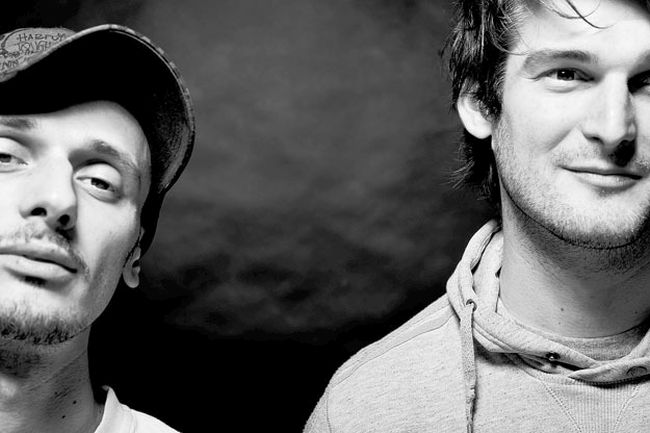
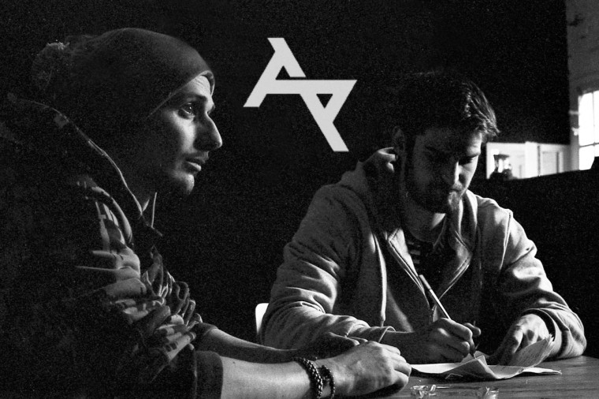

Aktív évek: 1996-2018
Tagok:
Saiid (Süveg Márk – 1980) Budapest. Érettségi után kisebb-nagyobb megszakításokkal folyamatosan dolgozott, miközben lefektette Akkezdet zenei alapjait, 1996 óta hiphop-DJ, majd zenei producer és MC, valamint menedzselte a csapatot közel tíz éven át, amíg egy profi ügynök meg nem érkezett. 2006-tól Saiid aktív slammer, az első rendezvény óta része a hazai slam poetry életnek, kétszeres országos bajnok, európai bajnokságon 5. helyezést ért el 2012-ben. Részt vett a 2018-as Európa Bajnokság lebonyolításában, szervezőként és házigazdaként. 2019 eleje óta szólókarrierjét építi, szilveszter éjjel jelent meg első, teljesen általa producerált szóló lemeze, a R.E.P. mixtape, amit megelőzött 3 teljesen új dal is.
Újonc (Závada Péter – 1982): Értelmiségi, irodalmár családban született Budapesten. Apja Závada Pál, Kossuth-díjas író. Már fiatalon részt vett irodalmi felolvasásokon, írótáborokban. Az underground hiphoppal az irodalmár családi közeg elleni tizenéves lázadásként kezdett foglalkozni. Két évig járt közgazdasági egyetemre, majd az ELTE-n szerzett angol–olasz tanári diplomát. Sokáig tanított nyelviskolákban, foglalkozott reklámszövegírással is. 2009-ben a Jelenkorban jelentek meg először versei, azóta publikál rendszeresen irodalmi folyóiratokban. Verseit többek között az Élet és Irodalom, az Alföld, a Holmi, a Műút, az Ex Symposion, a Pannonhalmi Szemle, a Zempléni Múzsa, a Szkholion, a Bárka és a Helikon közölte. Első verseskötete Ahol megszakad címmel a Libri Kiadó gondozásában jelent meg 2012-ben, amiért 2013-ban Horváth Péter irodalmi ösztöndíjra jelölték, ahol bejutott a zsűri által legjobbnak ítélt három végső jelölt közé. 2013-ban részt vett a berlini International Poesie Festivalon, ahol Kemény Istvánnal és Borbély Szilárddal olvasott fel. Második verseskötete 2015-ben Mész címmel jelent meg a Jelenkor Kiadó gondozásában, amiért második alkalommal is Horváth Péter irodalmi ösztöndíjra jelölték, ahol szintén bejutott a zsűri által legjobbnak ítélt három jelölt közé. 2016-ban Örkény István drámaírói ösztöndíjat kapott. 2017-ben Móricz Zsigmond irodalmi ösztöndíjban részesült. 2017-ben megjelent harmadik, Roncs szélárnyékban című verseskötete a Jelenkornál. 2017-ben neki ítélték a Horváth Péter irodalmi ösztöndíjat, melynek köszönhetően 2018 nyarán egy hónapot töltött a Literarisches Colloquium Berlinben. 2018-ban Je suis Amphitryon című drámájáért, mely szintén a Jelenkornál jelent meg, Szép Ernő-különdíjban részesült. 2012 óta a József Attila Kör tagja. Verseit eddig angol, német és román nyelvre fordították le. 2016-ban trAnzKaPHka: kastély címmel önálló, hatszámos szólólemezt jelentetett meg.
DJ Frequent (Havas Patrik - 1981): Szintén értelmiségi családban született Budapesten. Sok évig élt az Egyesült Államokban, majd a University of Hertfordshire nevű egyetemen végzett 2004-ben. 2004 óta tagja a csapatnak mint DJ.
 